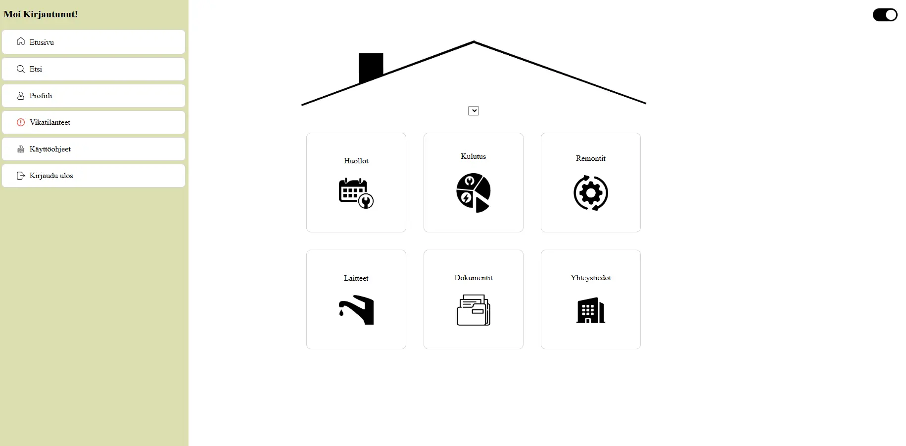
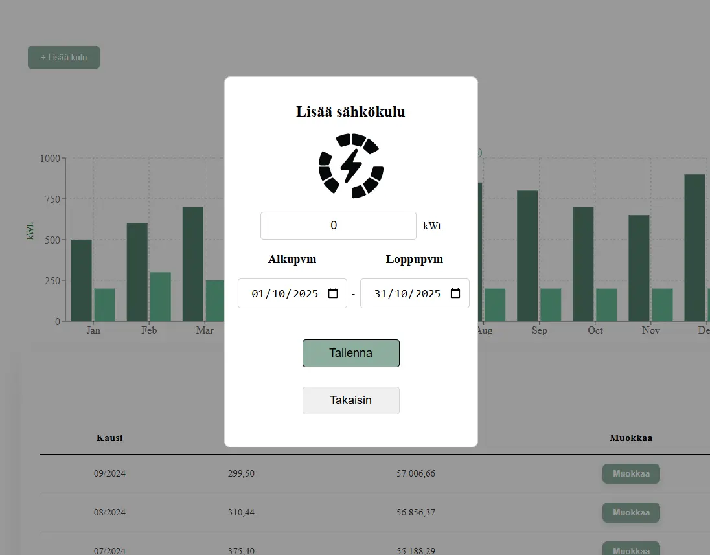
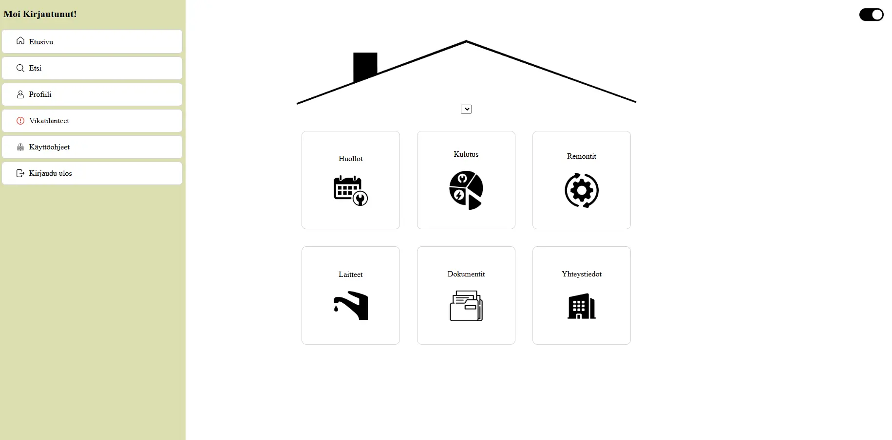
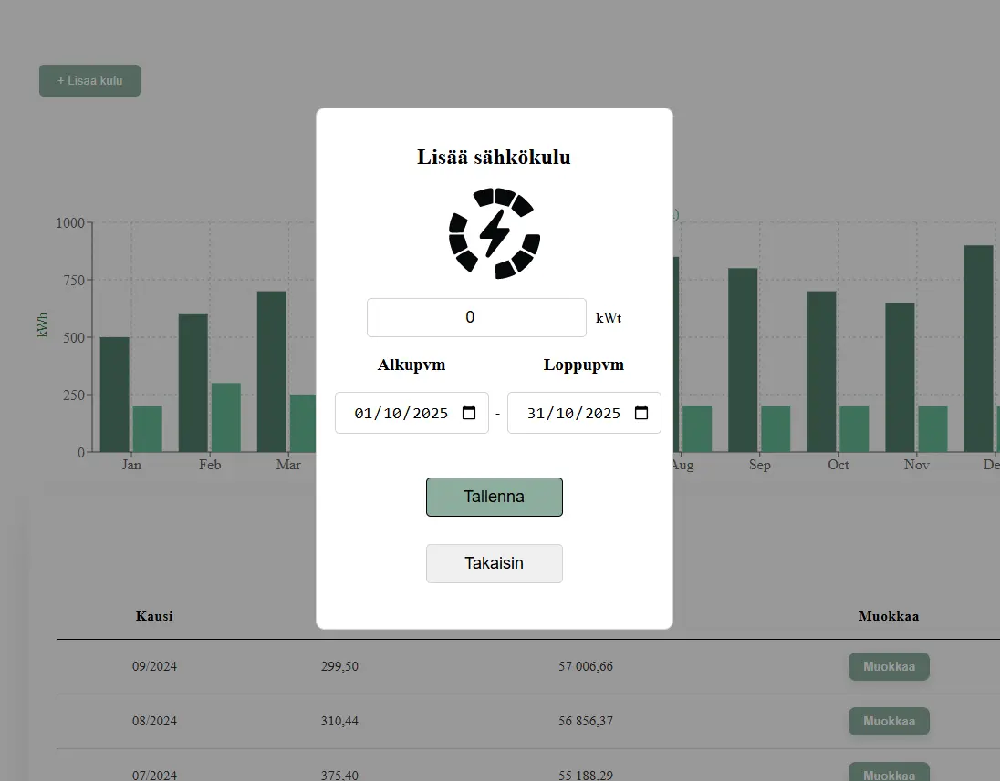

Digitaalinen huoltokirja
Kuvaus
React-pohjainen sovellus kiinteistöjen hallintaan, jossa omistaja voi seurata remontteja, huoltotarpeita, kuluja ja laitetietoja sekä hallita dokumentteja. Toimin projektin UI/UX-suunnittelijana ja tiimin Scrum Masterina, johdin päivittäiset palaverit, dokumentoin etenemisen GitHubiin ja suunnittelin käyttöliittymän. Sovellus toteutettiin ryhmätyönä.
Keskeiset ominaisuudet
- Kiinteistön tietojen hallinta
- Kulujen, huoltojen, remonttien ja dokumenttien seuranta
- Responsiiviset ja käyttäjäystävälliset käyttöliittymät desktopille ja mobiilille
- Tiimityöskentely GitHubin versionhallinnalla ja Scrum-prosessin mukaisesti
Opitut asiat
Harjoittelin UI/UX-suunnittelua Figmaa hyödyntäen ja opin luomaan selkeitä, responsiivisia käyttöliittymiä eri laitteille. Syvensin osaamistani Reactin käytössä, front-endin yhdistämisessä Node.js- ja MySQL-backendiin sekä tiimityöskentelyssä GitHubin versionhallinnan avulla. Toimin myös Scrum Masterina, johdin päivittäisiä palavereja ja dokumentoin projektin etenemistä, mikä vahvisti projektinhallintataitojani.
Teknologiat
React, Figma, HTML, CSS, JavaScript, Node.js, MySQL, Git/GitHub
 


